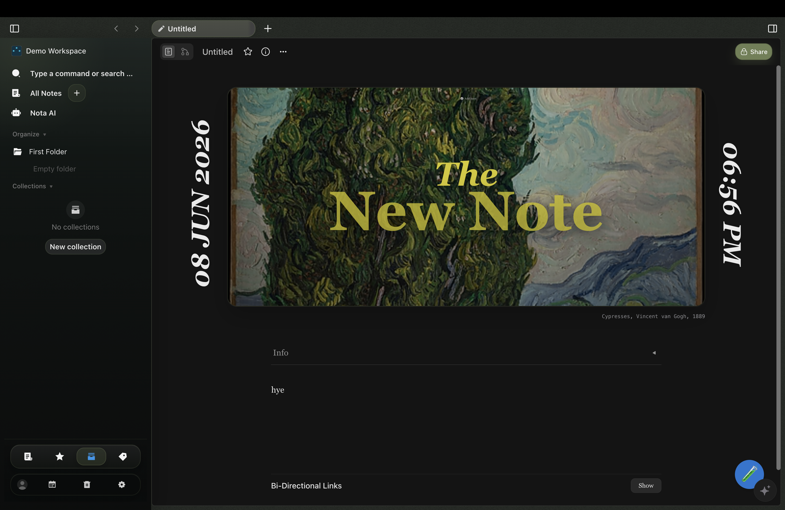

Start with a cover, not a blank rectangle.
Give a note a cover image, a title, and a date, and it becomes something you actually want to return to. Browse your workspace like a gallery instead of scrolling a list of filenames.
Nota is a local-first workspace for writing, drawing, meetings, and AI. It opens with atmosphere, keeps the tools in one surface, and lets the work stay yours.

Each note can lead with cover art, a date, and context — so you land in a space that already has shape instead of a blinking cursor on an empty page. Documents and freeform canvas live side by side.
Give a note a cover image, a title, and a date, and it becomes something you actually want to return to. Browse your workspace like a gallery instead of scrolling a list of filenames.
"Write, draw, plan, and ask AI — without ever leaving the note."
01
A note can open like a room. Artwork, date, context, and structure all arrive before the first sentence does.
02
Write, sketch, collect, and arrange without leaving the workspace or forcing the idea into separate tools.
03
Ask from the workspace, route through your own models or keys, and keep the answer anchored to real source material.
Notes and canvas are just the start. Nota runs AI on-device, searches your whole workspace by meaning, and turns meetings into pages you can edit.
Local AI
On-device models handle chat, summaries, and note actions without the cloud — or plug in your own OpenAI, Anthropic, or Google key when you want more power.
Semantic search
Search by meaning, not just keywords. Nota finds the right note, block, or canvas and keeps AI answers grounded in your own material.
Meetings
Capture a meeting, get a transcript and summary, then save the outcome as a workspace page you can search, link, and revise.
Canvas + docs
Write structured documents and sketch on a freeform canvas in the same note — no switching between separate apps to think.
Your keys, your data
Hosted providers are opt-in. Your API keys stay on your machine in a local file — never sent to or managed by a Nota server.
Tools & agents
Attach MCP tools and let AI take real actions inside your workspace, all routed through the same provider setup you control.
Your notes stay on your device. AI runs through your own models or keys. Meetings turn into editable pages. Documents and canvas share one interface — so nothing lives in a separate tool.
Your workspace stays canonical on your device. Sync, export, and cloud providers layer on top instead of taking ownership away.
Google Drive backup and Calendar access are optional. Supported builds open your browser to request the permissions you choose. Your local workspace remains usable without a Google account.
Capture, transcribe, summarize, and save the outcome as workspace content that can be searched, linked, and revised later.
Notes, canvases, AI, and planning sit inside the same product grammar so the landing page feels like the app itself.
Ask questions and draft from inside the workspace, routed through your own models or API keys. Answers stay anchored to your real notes — not someone else's cloud.
The short answers to the things people ask first.
No. You can write locally as soon as Nota opens. A Google connection for Drive backup or Calendar access is optional and depends on the build configuration.
Yes, after downloading a local text model in AI Settings. The first download needs internet access; chat, summaries, and note actions then run on your device. Your provider key is optional and only used when you choose a hosted provider.
On your device. Your workspace stays canonical locally; sync, export, and cloud backup layer on top instead of taking ownership away.
The first public beta targets macOS on Apple Silicon. Windows x64 and Linux x64 builds need release validation. Available installers and updates are listed on GitHub Releases; automatic updates are not enabled yet.
Download the desktop app and start with a workspace that stays on your device. Connect Google Drive through the browser whenever you want a backup.